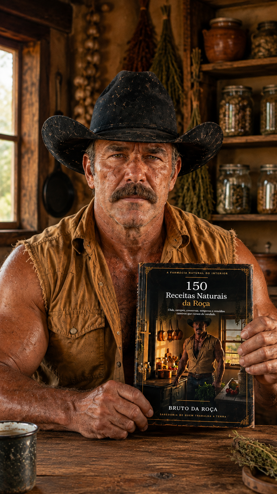
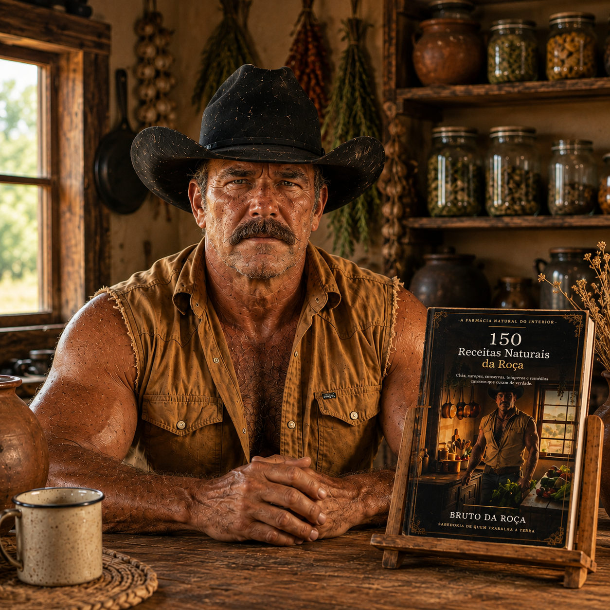
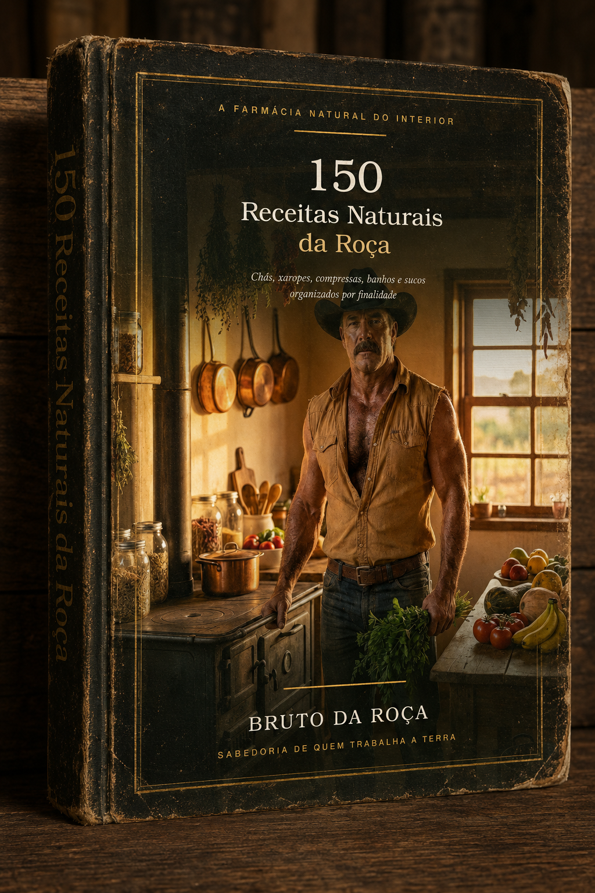

Pra aliviar dor, sono ruim, digestão pesada e outros probleminhas do dia a dia, sem sair de casa e sem depender de remédio caro pra tudo.
Compra segura • Acesso digital imediato • 7 dias de garantia
🔒 Compra segura • 📱 Acesso imediato • 🛡️ 7 dias de garantia

A seguir, os 15 capítulos que você vai encontrar no e-book completo da Farmácia Natural do Interior. Sem ficar procurando em vídeo nenhum, é só escolher o capítulo e seguir o preparo.
Receitas para aliviar o desconforto depois das refeições e sentir mais leveza no dia a dia.
Chás e banhos que ajudam a acalmar a mente e ter uma noite de sono tranquila.
Preparos caseiros para aliviar dores e ganhar mais mobilidade nas juntas.
Receitas que ajudam o corpo a se limpar naturalmente e recuperar energia.
Chás e cuidados simples para manter os rins saudáveis e equilibrados.
Receitas que ajudam a desinchar e sentir o corpo mais leve todos os dias.
Preparos que favorecem a circulação e trazem mais disposição para o dia.
Cuidados simples do dia a dia para manter a pressão sob controle.
Receitas que ajudam a equilibrar o açúcar no sangue com hábitos naturais.
Receitas caseiras para fortalecer, dar brilho e estimular o crescimento dos cabelos.
Preparos que reforçam as defesas do corpo contra gripes e resfriados.
Receitas para ganhar energia e enfrentar o dia com mais vitalidade.
Chás e xaropes caseiros para aliviar o desconforto na garganta.
Receitas naturais para cuidar e hidratar a pele com ingredientes simples.
Receitas que cuidam do equilíbrio e da qualidade de vida como um todo.
Aprendi vendo minha mãe ferver folha de boldo depois do almoço de domingo, vendo meu pai amassar erva no pano pra fazer compressa no joelho depois de um dia de enxada, vendo o vizinho velho apontar no quintal qual mato servia pra quê. Era tudo passado de boca em boca, de geração em geração, até eu resolver reunir essas 150 receitas aqui, separadas por finalidade, do jeito que a roça sempre fez: direto, sem frescura, com respeito por quem veio antes.
⏰ ATENÇÃO: Esta condição especial é válida somente nesta visita.
De R$ 65,90 por R$ 35,90.

Assim que o pagamento for confirmado você recebe um e-mail com o link de acesso. É só clicar e abrir no celular, tablet ou computador. Não precisa instalar nada.
Para acessar pela primeira vez sim. Mas você pode salvar o PDF no seu celular ou computador e consultar quando quiser, mesmo sem internet.
Sim. O material foi feito pra ser lido no celular, com letra grande e fácil de navegar. Funciona em qualquer smartphone, tablet ou computador.
Você tem 7 dias de garantia completa. Se por qualquer motivo não ficar satisfeito, é só me avisar dentro desse prazo que eu devolvo o valor inteiro. Sem pergunta, sem enrolação.
Não. As receitas reunidas aqui são de caráter tradicional e informativo. Elas não substituem diagnóstico, tratamento ou acompanhamento médico. Em caso de dúvida, consulte sempre um profissional de saúde.